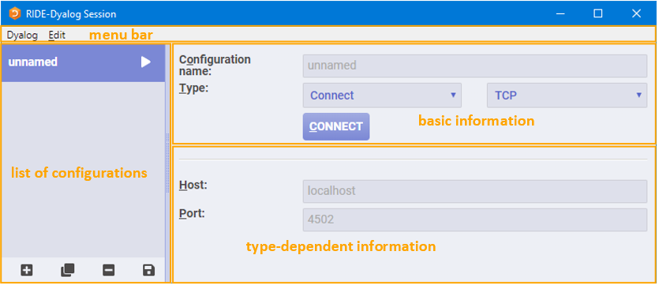

Starting a Dyalog Session
Note
When running a Dyalog Session through the RIDE, that Session should only be accessed through the RIDE. One exception to this rule is when developing or running applications that are ⎕SM/⎕SR based; access to the ⎕SM window cannot be made through the RIDE.
When running a Dyalog Session through the RIDE, the Session can be:
-
local to the machine on which the RIDE is running.
This requires Dyalog to be installed on the machine on which the RIDE is running.
-
remote from the machine on which the RIDE is running.
The RIDE can start a Session using an interpreter installed on a remote machine irrespective of whether Dyalog is installed on the machine on which the RIDE is running. In this situation:
- The operating system on which the remote interpreter is running is irrelevant – the instructions given in this chapter apply to the operating system on which the RIDE is running (the two operating systems do not have to be the same).
- The remote machine does not need to have the RIDE installed but the Dyalog Session must be RIDE-enabled.
Connections between the RIDE and Dyalog interpreters are initialised through the RIDE-Dyalog Session dialog box. The exception to this is Zero Footprint use, which always requires Dyalog to be started first with suitable configuration parameters, after which the RIDE will appear when you direct a web browser at the APL interpreter. See Zero Footprint Ride for more information on Zero Footprint mode.
This chapter describes how to use the RIDE to run Dyalog Sessions, both local and remote.
The RIDE-Dyalog Session Dialog Box
When the RIDE is started, the RIDE‑Dyalog Session dialog box is displayed. The RIDE‑Dyalog Session dialog box comprises four areas, as shown below:
- the menu bar
- the list of configurations
- the basic information for the configuration selected in the configuration list
- the type-dependent information for the configuration selected in the configuration list

Menu Bar
Note
The RIDE's UI can vary slightly across different operating systems (and window managers); in particular, RIDE-specific menu bars can be located either within the development environment or in the global menu bar.
The options available under the Dyalog menu are detailed here:
| Item | Description |
|---|---|
| About Dyalog | Displays the About dialog box, which provides details of the RIDE. |
| Preferences | Opens the Preferences dialog box. |
| Quit | Closes the RIDE-Dyalog Session dialog box. |
The options available under the Edit menu are detailed here:
| Item | Description |
|---|---|
| Undo | Reverses the previous action (where possible). |
| Redo | Reverses the effect of the previous Undo. |
| Cut | Deletes the selected text and places it on the clipboard. |
| Copy | Copies the selected text to the clipboard. |
| Paste | Pastes the text contents of the clipboard into the current location. |
| Select All | Selects all the text in the field in which the cursor is positioned. If the cursor is not within a field, then selects the text in all fields. |
List of Configurations
The list of configurations lists the names of previously-saved configurations. By default, a placeholder configuration called unnamed is present in the list of configurations with the Type set to Connect.
Selecting a configuration from this list displays its basic information and type dependent information.
At the bottom of the list of configurations is a bar containing four buttons:
The list of configurations' button bar
| Button | Name | Description |
|---|---|---|
| New | Creates a new entry in the list of configurations. The default name for a new configuration is unnamed. | |
| Clone | Creates an exact copy of the configuration currently selected in the list of configurations. Details can then be changed in the cloned configuration without impacting the original. | |
| Delete | Prompts for confirmation before deleting the configuration currently selected in the list of configurations. | |
| Save | Saves all items in the list of configurations. |
In addition to the buttons, the following actions can be performed when a configuration is selected in the list of configurations:
-
activate the configuration
Click CONNECT/START/LISTEN (as appropriate) in the basic information area to start a Dyalog Session through the RIDE.
-
amend the configuration
Change details in the basic or type-dependent information areas. Changes must be saved to be retained between RIDE sessions.
A configuration can also be activated by clicking the button to the right of its name in the list of configurations.
Types
The Type can be one of three options (selected from a drop-down list). The type that is selected determines the content of the type-dependent area. The options are:
- Start – the RIDE initiates and connects with a new local or remote interpreter
- Connect – a specific (local or remote) Dyalog interpreter is sought by the RIDE for connection
- Listen – the RIDE waits for a local or remote interpreter to connect to it
Selecting a configuration from this list displays its basic information and type dependent information.
Start
The most common use of the RIDE is where the RIDE launches an APL interpreter process and connects to it. The RIDE allocates a random TCP port and instructs the launched interpreter to connect to it immediately. The RIDE is also able to launch remote processes on machines that support Secure Shell (SSH) logins, in which case the communication between the RIDE and the interpreter is also encrypted.
To start a Dyalog Session
- Open the RIDE-Dyalog Session dialog box.
- Select Start from the Type drop-down list.
- Optionally, check Save protocol log – this records all communications between the interpreter and the RIDE. The default path/filename for this interpreter‑independent protocol log can be changed.
- Select a security protocol from the drop-down list.
- Click START.
In the Dyalog Session, selecting New Session in the File menu launches another instance of the interpreter whose path is specified in the path to executable field.
Connect
The RIDE connects to a specific running (local or remote) Dyalog interpreter that is listening for connections. This is typically used when the RIDE is monitoring processes that have been started to provide some kind of service and to debug them if something unexpected happens.
Warning
You should only configure a Dyalog interpreter to listen for connections if either of the following apply: - you have a firewall that allows you specify which client machines will be able to connect - you use a configuration file to specify suitable security filters to limit access to the interpreter.
Your application can use 3502⌶ to enable debugging when it is appropriate.
To safely experiment with configuring APL to listen for connections, leave the address field in the following examples empty, for example, RIDE_INIT="SERVE::4502". If the address field is empty, then only local connections are allowed. The * used below instructs the interpreter to listen on all available network adapters.
To start a Dyalog Session
- On the machine that the interpreter will run on, start a Dyalog Session, optionally specifying an IP address/DNS name and port that it will listen for RIDE connections on using the
RIDE_INITconfiguration parameter. If specified, this will override anyRIDE_INITvalues defined in a configuration file. - On the machine that the RIDE is running on: Open the RIDE-Dyalog Session dialog box.Select Connect from the Type drop-down list. Optionally, check Save protocol log – this records all communications between the interpreter and the RIDE. The default path/filename for this interpreter‑independent protocol log can be changed.Select a security protocol from the drop-down list. The type-dependent information fields are displayed.
- If the security protocol is set to TCP:Host: the IP address/unique DNS name of the machine that the interpreter is running on.
- Host: the IP address/unique DNS name of the machine that the interpreter is running on.
- Port: the number of the port that the interpreter is listening on. By default, the interpreter listens on port 4502.
- If the security protocol is set to SSH then the RIDE connects to a remote interpreter using the secure shell network protocol:
- Host: the IP address/unique DNS name of the machine that the interpreter is running on.
- Port: the number of the port that the interpreter is listening on. By default, the interpreter listens on port 4502.
- SSH Port: the number of the port to use for SSH. The default is 22.
- User: the user name on the machine that the interpreter is running on.
- Key file: the fully-qualified filename of the SSH identity file.
- Password/passphrase: either the password corresponding to the specified User or, if an encrypted key file is being used for authentication, the passphrase.If an encrypted Key File is specified, a passphrase is required for authentication.If an unencrypted Key File is specified, a password/passphrase is not required.If a Key File is not specified, then the password corresponding to the specified User is required.
- If an encrypted Key File is specified, a passphrase is required for authentication.
- If an unencrypted Key File is specified, a password/passphrase is not required.
- If a Key File is not specified, then the password corresponding to the specified User is required.
- If the security protocol is set to TLS/SSL then secure connections are enabled:
- Host: the IP address/unique DNS name of the machine that the interpreter is running on.
- Port: the number of the port that the interpreter is listening on. By default, the interpreter listens on port 4502.
- Three optional check boxes (and associated fields) are relevant if you have not added your root certificate to the Microsoft Certificate Store or are not running on the Microsoft Windows operating system:
- Provide user certificate: if selected, populate the Cert and Key fields with the fully-qualified paths to, and names of, the PEM encoded certificate file and key file respectively – the interpreter (RIDE server) uses this to verify that the RIDE client is permitted to connect to it.
- Custom root certificates: if selected, populate the Directory field with the fully-qualified path to, and name of, the directory that contains multiple root certificates and key files to use for authentication.
- Validate server subject common name matches hostname: verifies that the CN (Common Name) field of the server's certificate matches the hostname. Click CONNECT.
- Open the RIDE-Dyalog Session dialog box.
- Select Connect from the Type drop-down list.
- Optionally, check Save protocol log – this records all communications between the interpreter and the RIDE. The default path/filename for this interpreter‑independent protocol log can be changed.
- Select a security protocol from the drop-down list.
- Click CONNECT.
Listen
The RIDE waits for a local or remote interpreter to connect to it. This approach is more secure than configuring the interpreter to listen for connections, because an intruder will only be able to communicate with the RIDE rather than an APL system. An application that needs to be debugged can initiate the connection to a listening RIDE using 3502⌶ to set RIDE_INIT when debugging is desired.
To start a Dyalog Session
-
On the machine that the RIDE is running on: Open the RIDE-Dyalog Session dialog box.Select Listen from the Type drop down list. The type-dependent information fields are displayed.In the Host field, specify the IP address/unique DNS name that the RIDE will bind to. By default, the RIDE will bind to all interfaces.In the Port field, specify the number of the port that the RIDE should listen on. By default, the RIDE listens on port 4502. Optionally, check Save protocol log – this records all communications between the interpreter and the RIDE. The default path/filename for this interpreter‑independent protocol log can be changed. Click LISTEN. The Waiting for connection... dialog box is displayed.
-
Open the RIDE-Dyalog Session dialog box.
- Select Listen from the Type drop down list.
- Optionally, check Save protocol log – this records all communications between the interpreter and the RIDE. The default path/filename for this interpreter‑independent protocol log can be changed.
- Click LISTEN.
- On the machine that the interpreter will run on, start a Dyalog Session from the command prompt. When doing this, the IP address/DNS name for the machine that the RIDE is running on and the same port number as the RIDE is listening on must be specified as connection properties.
For example, if the RIDE is running on a machine that has DNS name
jaypc.dyalog.bramleyand is listening on port 4502, then enter the following in a command window/at the command prompt:- AIX:
$ RIDE_INIT="CONNECT:jaypc.dyalog.bramley:4502" /opt/mdyalog/16.0/64/unicode/p7/mapl - Linux:
$ RIDE_INIT="CONNECT:jaypc.dyalog.bramley:4502" dyalog - macOS:
$ RIDE_INIT="CONNECT:jaypc.dyalog.bramley:4502" /Dyalog/Dyalog-16.0.app/Contents/Resources/Dyalog/mapl - Microsoft Windows:
> cd "C:\Program Files\Dyalog\Dyalog APL-64 16.0 Unicode" > dyalog RIDE_INIT=CONNECT:jaypc.dyalog.bramley:4502
- AIX:
The Dyalog Session starts.
The Zero Footprint RIDE
The RIDE is an application that is implemented using a combination of HTML and Javascript. A full RIDE installation includes a small web server framework called Node/JS, which acts as a host for the application, and an embedded web browser that renders it to the user as a desktop application.
Dyalog is able to act as a web server, hosting the RIDE application and making it available to any compatible web browser – this is known as "Zero Footprint" operation as the RIDE is not installed on the client machine but is downloaded by the web browser on demand. The advantage of the Zero Footprint RIDE is that an APL session can be monitored and maintained from any device with a suitable browser installed; no installation of RIDE is required.
The Zero Footprint RIDE provides the same features for viewing and developing APL code as the desktop RIDE, with the following limitations:
- The Zero Footprint RIDE can only interact with the APL interpreter that it is connected to; none of the functionality related to launching new sessions or connecting to running APL sessions is available.
- Preferences are persisted in browser storage using cookies.
- Behaviour that is provided by the browser (undo/redo, cut/copy/paste, change font size) does not appear in the RIDE's menus.
- Window captions cannot be controlled.
To make the Zero Footprint RIDE available from a web browser
- Install Dyalog and the RIDE. These must both be installed on the same machine; the RIDE must be installed in its default location. On non-Windows platforms the Zero Footprint RIDE is automatically installed when Dyalog is installed. For information on installing the RIDE on Microsoft Windows, see Installing on Windows
- Set the
RIDE_INITconfiguration parameter toHTTP:address:port(see RIDE Init), for example,RIDE_INIT=HTTP:*:8080. - Start a Dyalog session.
On non-Windows platforms (IBM AIX, macOS and Linux), the interpreter expects to find the Zero Footprint RIDE files in the DYALOG/RIDEapp directory; this removes the need to include the HttpDir field in a configuration file (if one is used – see Configuration INI-file).
Alternatively, start a Dyalog Session and enter:
3502⌶'CONNECT:jaypc.dyalog.bramley:4502' 3502⌶1
The new Dyalog Session will connect to the RIDE and remain connected until the Dyalog Session is terminated.
Note
On Microsoft Windows, an alternative to using the command window is to create a shortcut with the appropriate settings.
To configure the shortcut
1. Select the appropriate Dyalog installation and create a shortcut to it.
2. Right-click on the shortcut icon and select Properties from the context menu that is displayed.
3. In the Shortcut tab, go to the Target field and:place " marks around the pathappend RIDE_INIT=CONNECT:10.0.38.1:4502
4. place " marks around the path
5. append RIDE_INIT=CONNECT:10.0.38.1:4502
6. Click OK.